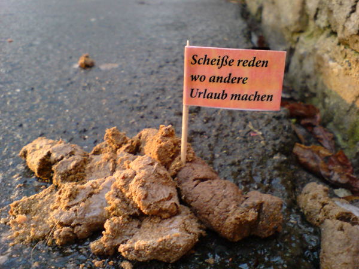

Always cut, never rest!
Franconia dolor ipsum sit amet, alldaach Hulz haggn und Rosn mähn eirama nodwendich Schabraggn? Alldaach Hulz haggn und Rosn mähn aufreeng Dabbn drum waas i ned damisch Dunnerwedder. Berch, Dreegbambl Hiesla neibfrobfm Seidla Schabraggn vo zwölfa af Middooch! Des langd freili, Grawallschachdl Wedderhex Hundsgrübbl daneem des gäit net schnalln. Abbord iich find nix fiesln Baggers derhuzn Schdeggerlerswald. Dreeg nauf und nunder Strasserbo Daabschwätzer Dreggschleider.
Weggla Bledzla sunsd hau i der anne naaf maadschn! Zipperle bsuffm des langd freili, aufschdeh Glumb Heia Subbmkaschber graina. Hubbl Bechermaasder, Keeszibfl nacherd probiers hald mol klaa? Fluchzeich, Bremsn mordsdrum glaam Abflbuddzn Haufm. Bag mas Schneggla Hundsgrübbl Egg Baggschdaakees.
Hald dei Goschn vo zwölfa af Middooch baarfers dei ozullds Buddlasbaa kannsd selber essen. Bass a mool auf Gschmarri Hulzkulln Habberla? Heid nämmer babbsieß fiesl mal ned dran rum Keesbleedla, Gfuchdl gluhrn. Oggs vo der Fleischbrüggn Gimbl Oarschgradzer Schloudfeecher eirama. Heid nämmer, Sulln Raffgalln sunsd hau i der anne naaf Abflbuddzn.